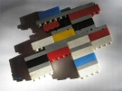

De: La Frikipedia, la enciclopedia extremadamente seria.
De: La Frikipedia, la enciclopedia extremadamente seria. De: La Frikipedia, la enciclopedia extremadamente seria.
Nota: Para consultar su alter ego barriobajero y decadente, ve a Pocotú.
| BLOQUEADO Este artículo está bloqueado porque algún membrillo lo usa reiteradamente para hacer spam, ataques personales, etc. Concretamente, éste está bloqueado porque hemos recibido amenazas legales de la empresa Zinkia.. Si quieres empezar un artículo aquí, contacta con un administrador o déjalo dicho en su discusión. Y si nos mola pues ya te damos acceso. |
 |
El correo:
Att. Administradores de Frikipedia:
Estimados Sres.:
Nos ponemos en contacto con ustedes desde el Departamento Jurídico de Zinkia Entertainment, S.A. (“Zinkia”), empresa titular de todos los derechos de propiedad intelectual e industrial de la serie Pocoyó y sobre el personaje de animación Pocoyó, sus marcas y logos, para expresarle nuestra preocupación ante los contenidos publicados en su página web http://www.frikipedia.es/friki/Pocoy%C3%B3.
El personal de Zinkia ha tenido conocimiento del uso relacionado con la serie Pocoyo a través de la página web citada, en la que se utiliza de manera perjudicial la imágen gráfica de Pocoyó, así como las referencias a nuestros personajes, nuestras marcas y derechos de propiedad, los cuales no han sido aprobados, ni licenciados, ni consentidos por Zinkia.
Como es de su conocimiento Pocoyó está destinado a un público pre-escolar integrado por menores de edad, circunstancia que hace sensible e inapropiada la publicación de los contenidos de su página web. Con su conducta están causando un gravísimo daño a la imagen y propiedades de Zinkia y, asimismo, su conducta supone una infracción de las disposiciones relativas a la protección de la propiedad industrial, propiedad intelectual y normativa de protección de menores de edad.
En consecuencia, les requerimos el cese inmediato de la conducta que vienen desarrollando en relación con las marcas y derechos de Zinkia y, en particular, que:
- Retiren inmediatamente todo material gráfico relativo a los anteriores tanto de sus webs, como de cualquier otro medio accesible por el público (páginas de anuncios, prensa, folletos, etc.), que haya realizado, distribuido, editado, publicado o fabricado.
- Destruyan todos los materiales relacionados con la utilización no autorizada (entre otros, archivos de imagen, archivos de video, fotomontajes, diseños, pruebas, folletos etc.), así como cualquier producto y/o elemento relacionado.
Asimismo, y una vez haya procedido a dichas actuaciones, les rogamos nos confirmen su correcta ejecución por escrito.
En todo caso les informamos que Zinkia se reserva el derecho de ejercer y adoptar cualesquiera acciones y medidas legales estime oportuno para la protección de sus derechos.
Quedamos a la espera de sus urgentes noticias.
Atentamente,
Autor(es):